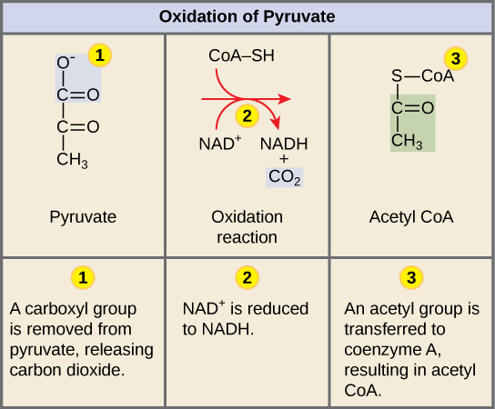

Oxidação do Piruvato + Ciclo do Ácido Cítrico (Krebs) · Matriz Mitocondrial
1. Estrutura da Mitocôndria
Compartimento
O que contém / Função
Membrana externa
Relativamente permeável (porinas); separa citosol do espaço intermembrana
Espaço intermembrana
Acumula H⁺ durante a cadeia respiratória (Parte 3)
Membrana interna (cristas)
Cadeia transportadora de elétrons + ATP sintase — muito seletiva
Matriz mitocondrial ⭐
Onde ocorrem oxidação do piruvato e ciclo de Krebs — aqui fica esta Parte 2
Por que as Cristas Importam?
Cristas são dobras da membrana interna. Mais dobras = mais área = mais ATP sintase.
Células com alto gasto energético (cardiomiócito, hepatócito) têm muitas cristas.
2. Oxidação do Piruvato — A Ponte entre Glicólise e Krebs

Oxidação do piruvato: (1) perda de CO₂, (2) NAD⁺ → NADH, (3) grupo acetil + CoA → Acetil-CoA (OpenStax)
Etapa 3 Grupo acetil + CoA → Acetil-CoA (o combustível do Krebs)
Resultado por Glicose (2 Piruvatos)
+2 NADH+2 CO₂Nenhum ATP direto nesta etapa
3. Ciclo do Ácido Cítrico (Krebs) — Visão Geral
3 Nomes, 1 Processo
Ciclo do Ácido Cítrico — pela 1ª molécula formada (citrato) Ciclo TCA / Tricarboxílico — pelos 3 grupos carboxila dos primeiros intermediários Ciclo de Krebs — por Hans Krebs (Prêmio Nobel 1953)
Similar à oxidação do piruvato: perde 1 CO₂. NAD⁺ → NADH (2º).
Inibida por NADH e succinil-CoA.
Contagem de CO₂ após Etapa 4
Por volta: 2 CO₂ liberados (etapas 3 e 4).
Por glicose (2 voltas): 4 CO₂ do Krebs + 2 CO₂ da oxidação do piruvato = 6 CO₂ total.
Isso corresponde exatamente aos 6 carbonos da glicose original (C₆H₁₂O₆).
5
Succinil-CoA sintetase
Succinil-CoA (4C) + GDP + Pi → Succinato (4C) + GTP + CoA-SH
Fosforilação em nível de substrato (sem cadeia respiratória).
A energia da ligação tioéster da succinil-CoA gera 1 GTP ≈ 1 ATP por volta.